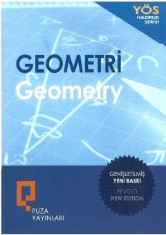

G1Geometriya fanini chuqur o'rganish uchun mo'ljallangan birinchi qism qo'llanma.
Ushbu kitob geometriya fanidan boshlang'ich va kengaytirilgan tushunchalarni o'rganish uchun mo'ljallangan qo'llanma hisoblanadi. Unda burchaklar, uchburchaklar, ko'pburchaklar, to'rtburchaklar hamda analitik geometriya va stereometriyaga oid mavzular batafsil yoritilgan.